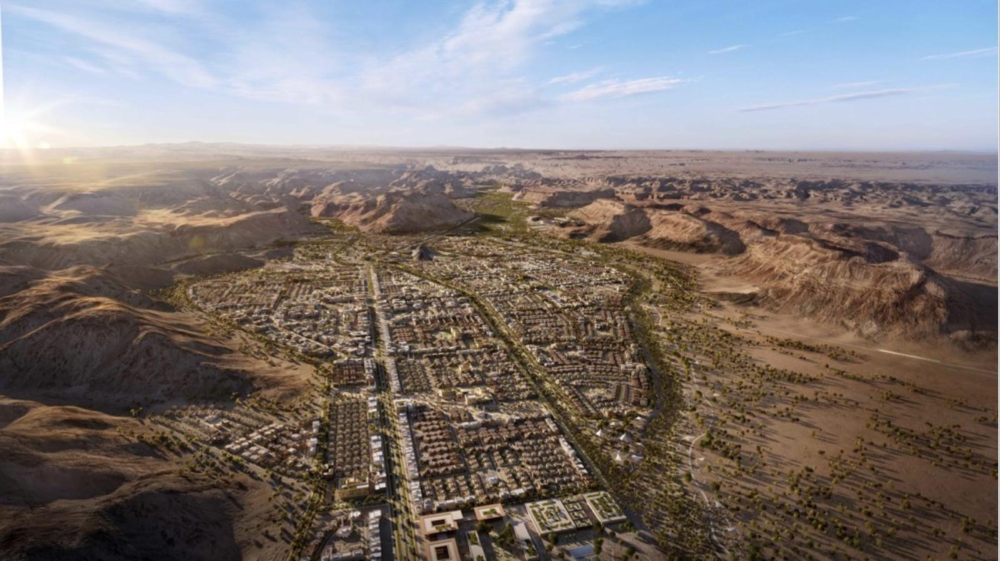

AlUla County Infrastructure Master Plan
Infrastructure planning · AlUla, Saudi Arabia
Infrastructure master plan for AlUla County, about 25,000 km2 with a population of about 45,000 across 51 settlements, for the Royal Commission for AlUla, with AECOM.
Partners

Client

More from AlUla
2022AlUla Strategic Framework PlanAlUla · 2022 Khaybar Heritage Area Master PlanKhaybar, AlUla · 20202021Sharaan Nature Reserve Master PlanAlUla · 2021-2022
Khaybar Heritage Area Master PlanKhaybar, AlUla · 20202021Sharaan Nature Reserve Master PlanAlUla · 2021-2022 Strategic Plan for the Optimisation of Saudi Railway Organization's Land and Property AssetsSaudi Arabia · 2017-20182024Al Rabita Pre-Concept Design CompetitionMakkah · 20242011Jeddah Stormwater Drainage ProgrammeJeddah · 2011-2012
Strategic Plan for the Optimisation of Saudi Railway Organization's Land and Property AssetsSaudi Arabia · 2017-20182024Al Rabita Pre-Concept Design CompetitionMakkah · 20242011Jeddah Stormwater Drainage ProgrammeJeddah · 2011-2012
Khaybar Heritage Area Master PlanKhaybar, AlUla · 20202021Sharaan Nature Reserve Master PlanAlUla · 2021-2022Strategic Plan for the Optimisation of Saudi Railway Organization's Land and Property AssetsSaudi Arabia · 2017-20182024Al Rabita Pre-Concept Design CompetitionMakkah · 20242011Jeddah Stormwater Drainage ProgrammeJeddah · 2011-2012